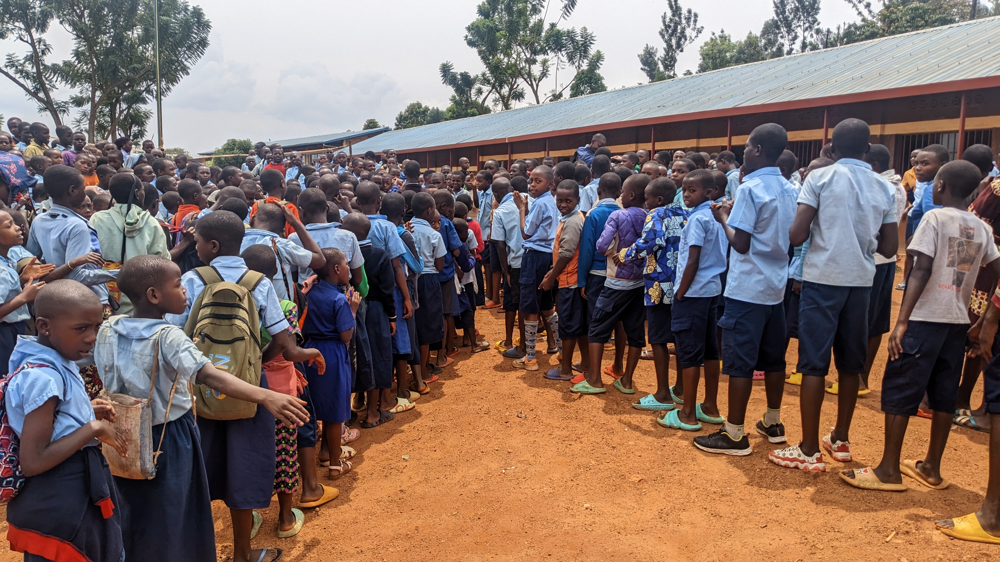
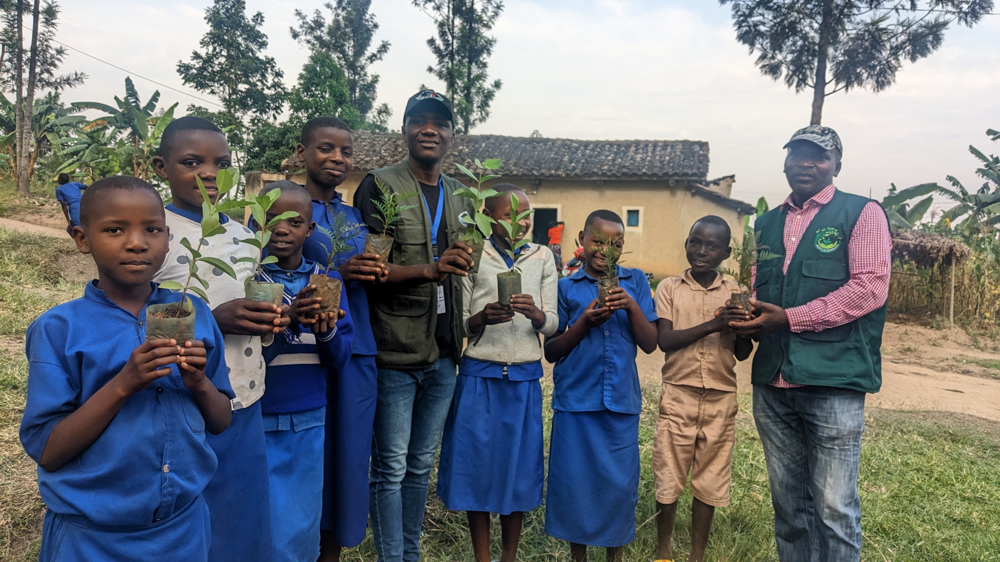
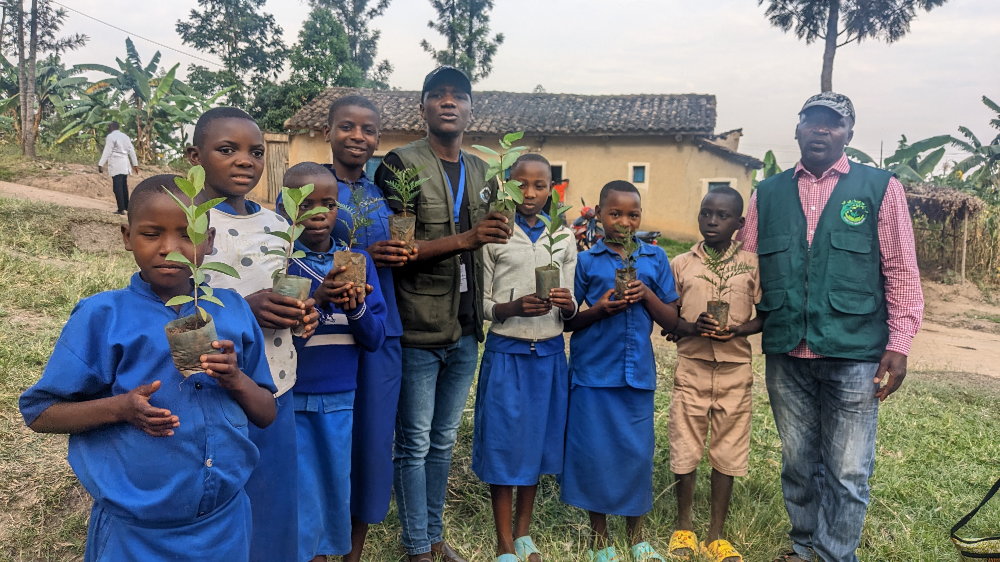

Agroforestry
Promoting tree planting alongside crops to restore soil health, increase biodiversity, and provide additional income through fruit, timber, and firewood.
- Fruit tree nurseries
- Boundary planting
- Soil conservation
Practical environmental action that empowers communities, supports small household farmers, and builds lasting resilience across Rwanda.
Green for Life Rwanda partners with communities to implement programs that integrate environmental conservation with livelihood improvement. Through hands-on training, community mobilization, and sustainable practices, we help people become active stewards of their environment while building a better future for themselves and their families.
Our programs are designed to reinforce each other — environmental education builds awareness, agroforestry restores land and provides income, and livelihood activities reduce pressure on natural resources. Together they create a cycle of sustainability and empowerment.


Promoting tree planting alongside crops to restore soil health, increase biodiversity, and provide additional income through fruit, timber, and firewood.

Helping communities adapt to climate change through reforestation, water conservation, and sustainable land management practices.
Engaging young people through school-based environmental clubs, workshops, and activities that build awareness and environmental leadership.
Empowering smallholder farmers, especially women, with training in sustainable agriculture, income-generating activities, and advocacy for environmental rights.
Training farmers to turn organic waste into nutrient-rich compost, improving soil fertility and reducing reliance on chemical fertilizers.
Workshops on preparing botanical pesticides from local plants, offering a low-cost, eco-friendly alternative to chemical inputs.
Community-run nurseries produce seedlings for reforestation and agroforestry, creating local employment and community ownership.
Hands-on learning groups where farmers experiment with and adopt sustainable techniques together, building shared knowledge.
Men and women who depend on farming for their livelihoods, receiving training and resources to improve yields sustainably.
Young people engaged through environmental clubs, learning to become future environmental leaders and advocates.
Entire communities benefit from restored ecosystems, improved water sources, and the power of collective environmental action.
Special focus on empowering women through saving groups, leadership opportunities, and sustainable livelihood activities.
Explore specific projects, read impact stories, or find out how you can support this work across Rwanda.